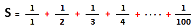

Algorithmsالحلقتين while و do while في الخوارزميات
أهداف الدرس
سنقوم الآن باستخدام الحلقات for, while, do while في كل تمرين حتى تفهمهم بشكل جيد.
ستلاحظ أيضاً أننا قمنا بتعريف العداد الذي سنستخدمه في الحلقة for قبل تعريفها, لكننا قمنا بتحديد من أي رقم تبدأ و عند أي رقم تنتهي بداخلها.
الهدف فقط من هذا الأسلوب الجديد جعلك ترى أنه يمكنك كتابة الكود بأساليب كثيرة جداً و الحصول على نفس النتيجة.
نصيحة
أعد كتابة كل تمرين مرتين على الأقل, و حاول دائماً أن تحلل و تكتب الكود قبل أن تنظر إلى الحل الجاهز.
إذا قضيت يوماً كاملاً و أنت تحاول أن تحلل التمارين, أفضل بكثير من أن تنظر إلى الحل مباشرةً.
الفرق بين الحلقات for, while, do while
في حال أردت إنشاء حلقة تتألف من 5 دورات, سيكون شكل الحلقة كالتالي.
توضيح الفروقات بين الحلقات الثلاثة
في الحلقة for تستطيع تعريف المتغير الذي ستستخدمه كعداد و وضع الشرط الذي يحدد أين تتوقف الحلقة و إضافة قيمة العداد على نفس السطر.
في الحلقتين while و do while أنت مجبر على أن تعرف المتغير الذي ستستخدمه كعداد مع تحديد قيمته قبل كتابة الحلقة.
في الحلقتين while و do while أنت مجبر على أن تزيد قيمة العداد في نهاية كل دورة.
في الحلقتين for و while يقوم الكمبيوتر بالتشييك على قيمة العداد قبل أن يبدأ في تنفيذ الكود, و على أساسها يحدد إذا كان سيبدأ بدورة جديدة أم لا.
في الحلقة do while يقوم الكمبيوتر بالتشييك على قيمة العداد بعد إنتهاء الكود من أجل الدورة التالية.
في الحلقة do while أنت مجبر أن تضع فاصلة منقوطة بعد الـ while و إلا سيسبب لك مشكلة في الكود لأنه سيظن أنك تريد تعريف حلقة while جديدة و ليس إغلاق الحلقة do while.
المبادئ الأساسية لعمليات الجمع و الضرب في الحلقات
في عمليات الجمع نحتاج متغير لنضع فيه ناتج الجمع في كل دورة, لذلك نعطيه صفر كقيمة أولية لأن الصفر لا يؤثر في عمليات الجمع.
في عمليات الضرب نحتاج متغير لنضع فيه ناتج الضرب في كل دورة, لذلك نعطيه واحد كقيمة أولية لأن الواحد لا يؤثر في عمليات الضرب.
لا تقلق ستفهم فكرة القيم الأولية 0 و 1 لاحقاً من التمارين.
تمارين شاملة حول الحلقات for, while, do while
التمرين الأول
أكتب برنامج يقوم بجمع جميع الأرقام من 1 إلى 100 و يعرض فقط المجموع النهائي بثلاث طرق.
أكتب كل طريقة في برنامج.

الحل و التفسير »
التمرين الثاني
أكتب برنامج يقوم بضرب جميع الأرقام من 1 إلى 10 و يعرض فقط المجموع النهائي بثلاث طرق.

الحل و التفسير »
التمرين الثالث
أكتب برنامج يظهر القيمة النهائية لـ S.

الحل و التفسير »

 محرر الويب
محرر الويب نظام الألوان
نظام الألوان محول الوحدات
محول الوحدات محلل عناوين الشبكات
محلل عناوين الشبكات